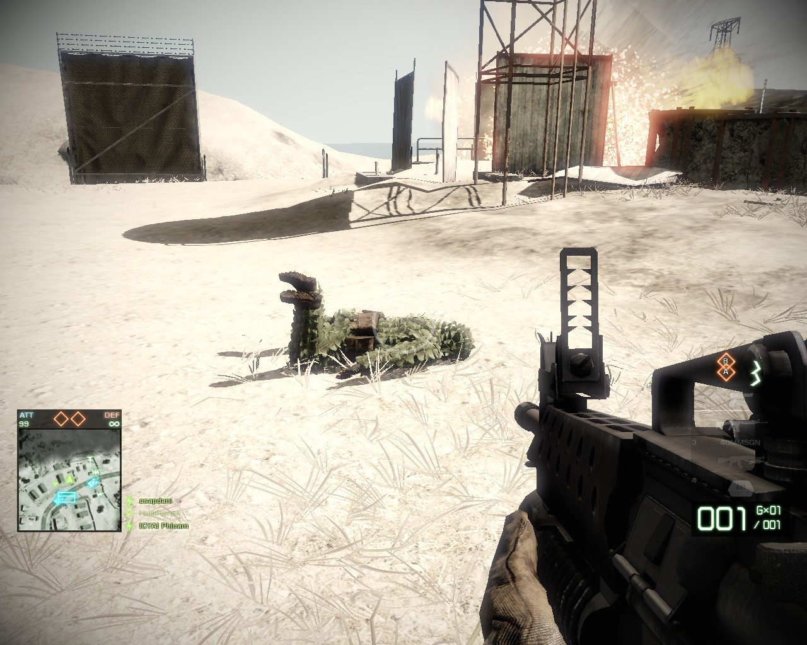
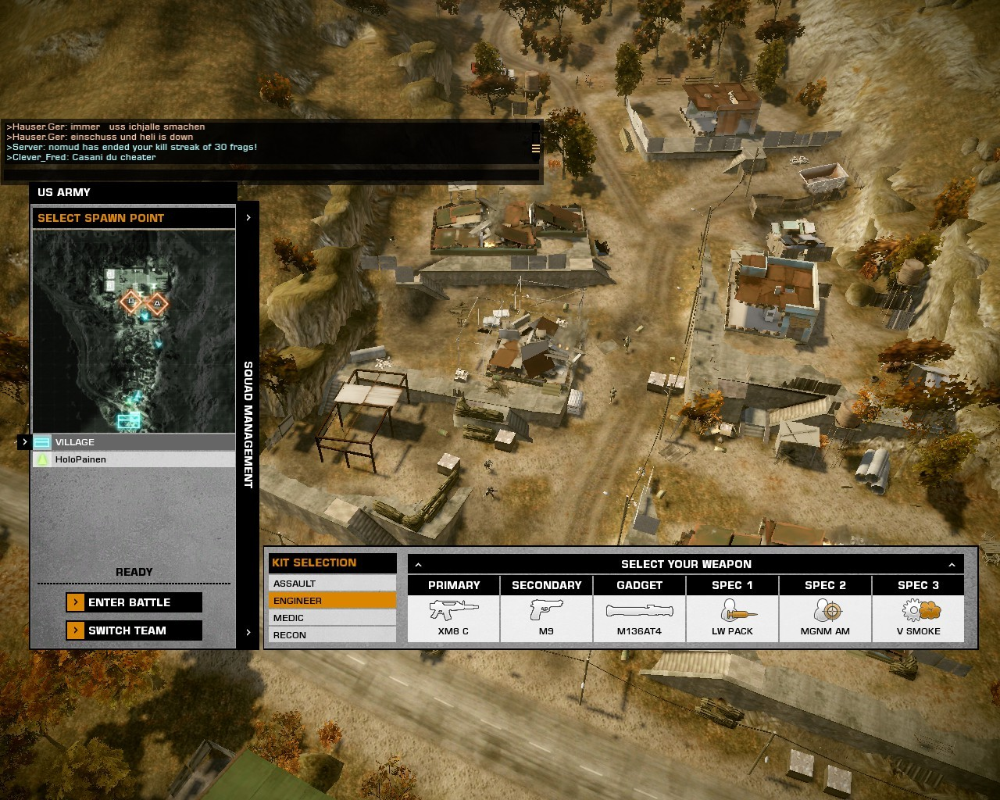
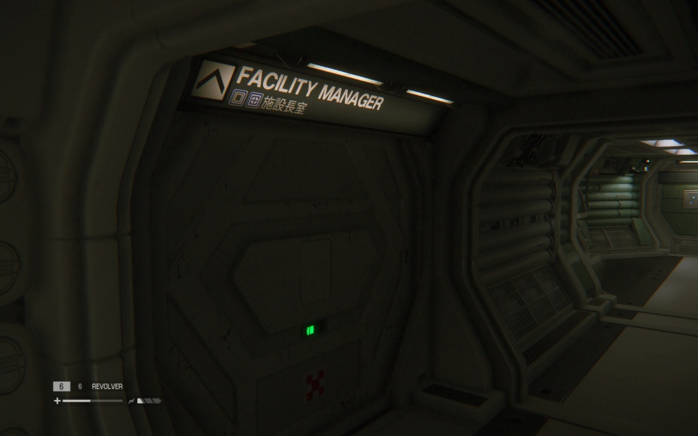
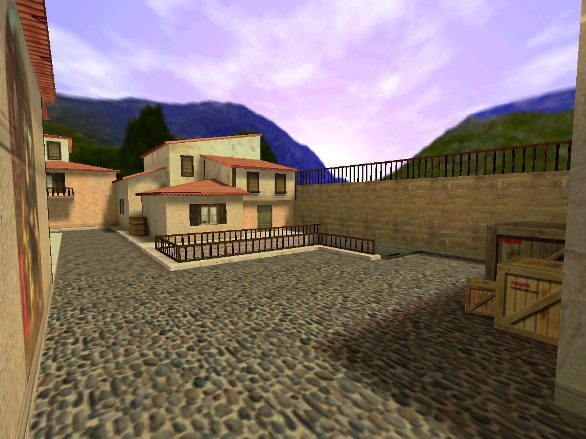
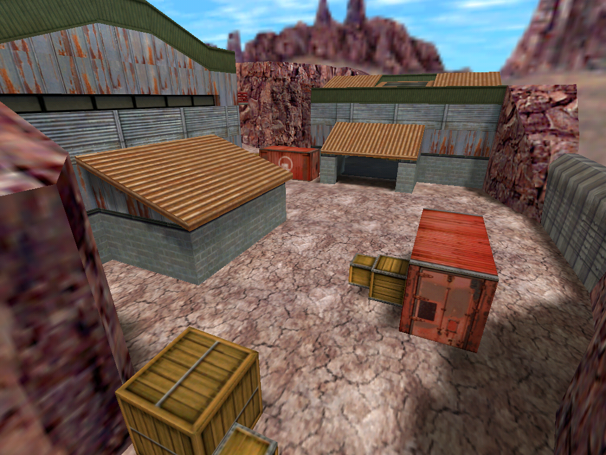
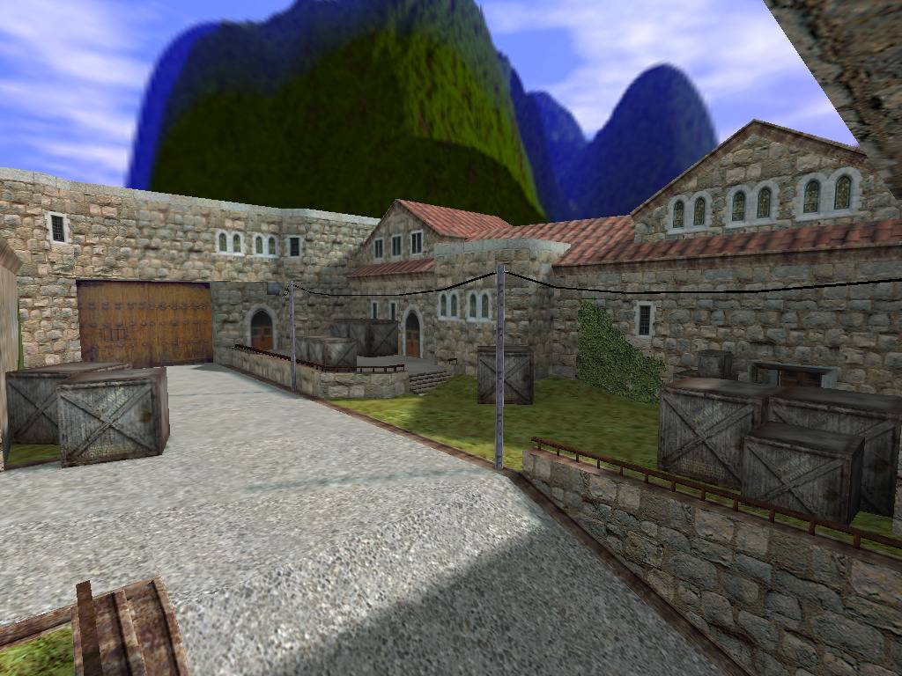

APOLLO and the Working Joe
Working together for a safer, better connected Sevastopol.

Computer Aided Design of Integrated Circuits (CADIC) - 1967
“Hi, I’d like to hear a TCP joke.”
“Hello, would you like to hear a TCP joke?”
“Yes, I’d like to hear a TCP joke.”
“OK, I’ll tell you a TCP joke.”
“Ok, I will hear a TCP joke.”
“Are you ready to hear a TCP joke?”
“Yes, I am ready to hear a TCP joke.”
“Ok, I am about to send the TCP joke. It will last 10 seconds, it has two characters, it does not have a setting, it ends with a punchline.”
“Ok, I am ready to get your TCP joke that will last 10 seconds, has two characters, does not have an explicit setting, and ends with a punchline.”
“I’m sorry, your connection has timed out. Hello, would you like to hear a TCP joke?”






Working together for a safer, better connected Sevastopol.

what. why? someone pls explain to me pls i wasnt born yet in 1999 why turn computer off before midnight? what happen if u dont?
y2k lol everyone was like “the supervirus is gonna take over the world and ruin everything and end the world!!!”
This is the oldest I’ve ever felt. Right now.
WHAT THE FUCK DO YOU MEAN YOU WEREN’T BORN YET IN 1999.
Ahh the Millenium bug.
It wasn’t a virus, it was an issue with how some old computers at the time were programmed to deal with dates. Basically some computers with older operating systems didn’t have anything in place to deal with the year reaching 99 and looping around to 00. It was believed that this inability to sync with the correct date would cause issues, and even crash entire systems the moment the date changed.
People flipped out about it, convinced that the date discrepancy between netwoked systems would bring down computers everywhere and shut down the internet and so all systems relying on computers, including plane navigation etc. would go down causing worldwide chaos. It was genuinely believed that people should all switch off computers to avoid this. One or two smart people spoke up and said “um hey, this actually will only effect a few very outdated computers and they’ll just display the wrong date, so it probably won’t be harmful” but were largely ignored because people selling books about the end of the world were talking louder.
In the end, absolutely nothing happened.
Oh gosh.
I’ve been a programmer working for various government agencies since the early 1990s and I can say with some confidence:
NOTHING HAPPENED BECAUSE WE WORKED VERY HARD FIXING SHIT THAT MOST DEFINITELY WOULD HAVE BROKEN ON 1-JAN-2000.
One example I personally worked on: vaccination databases.
My contract was with the CDC to coordinate immunization registries — you know, kids’ vaccine histories. What they got, when they got it, and (most importantly) which vaccines they were due to get next and when. These were state-wide registries, containing millions of records each.
Most of these systems were designed in the 1970s and 1980s, and stored the child’s DOB year as only two digits. This means that — had we not fixed it — just about every child in all the databases I worked on would have SUDDENLY AGED OUT OF THE PROGRAM 1-JAN-2000.
In other words: these kids would suddenly be “too old” to receive critical vaccines.
Okay, so that’s not a nuke plant exploding or airplanes dropping from the sky. In fact, nothing obvious would have occurred come Jan 1st.
BUT
Without the software advising doctors when to give vaccinations, an entire generation’s immunity to things like measles, mumps, smallpox (etc) would have been compromised. And nobody would even know there was a problem for months — possibly years — after.
You think the fun & games caused by a few anti-vaxers is bad?
Imagine whole populations going unvaccinated by accident… one case of measles and the death toll might be measured in millions.
This is one example I KNOW to be true, because I was there.
I also know that in the years leading up to 2000 there were ad-hoc discussion groups (particularly alt.risk) of amazed programmers and project managers that uncovered year-2000 traps… and fixed them.
Quietly, without fanfare.
In many cases because admitting there was a problem would have resulted in a lawsuit by angry customers. But mostly because it was our job to fix those design flaws before anyone was inconvenienced or hurt.
So, yeah… all that Y2K hysteria was for nothing, because programmers worked their asses off to make sure it was for nothing.
Apollo Mission Control Console, Houston, 2012

Why are the RAM slots, the only things I really want to get to, buried under a bunch of cables and the optical disk drive



This is how I managed to double my bandwidth back when we had ISDN (64→128 kbps). My ISP never noticed, or maybe they just didn’t care.


cs_italy

cs_italy

cs_siege

de_aztec

de_inferno

de_nuke

de_nuke

de_nuke

de_cbble


legújabb kedvenc albumom a fészbukon a 8ker blog oldalán valaki összegyűjtött csomó széthugyozott/vegyszerezett, romlásnak indult kerékvetőt (“kőből, öntött v. kovácsolt vasból, fából készült egészen egyszerü dúc-forma vagy ornamentált konzol-alaku eszköz annak az elhárítására, hogy bejáró kapukon a kocsi kerekei a kapufélfának neki ne menjenek”)


The Atlantis Space Shuttle Orbiter, on display at Kennedy Space Center Visitor Complex, is the most breathtaking museum piece on Earth. I say this because Atlantis wasn’t always on Earth and I have the photo to prove it. The final photo in the set shows Atlantis in orbit around our planet during STS-117. I photographed her from my front yard on the night of June 21, 2007, at the age of 17. I was blessed to live in the southeast corner of Idaho, an area with absolutely no light pollution. When Atlantis came overhead, I snapped this four second long exposure, getting the streak of light that you see in the lower-right corner of the frame. Seconds later, she had moved across the entire sky, over the horizon and out of sight. A few hours later, she reentered our atmosphere and landed safely back on earth. I’ll never forget that chilly night. Years before that, Atlantis dragged a sonic boom across my childhood home in Georgia while on approach to Kennedy Space Center. This was the first sonic boom I’d ever heard, and it scared the living hell out of me. When I see Atlantis up close, it’s surreal to think that this is the same object that I photographed before, the same ship that sonic boomed me. Every time I visit, I fondly remember these moments. It’s like seeing an old friend.

oij:
Sandy Smith - Mauritian Sunset (2005-6)